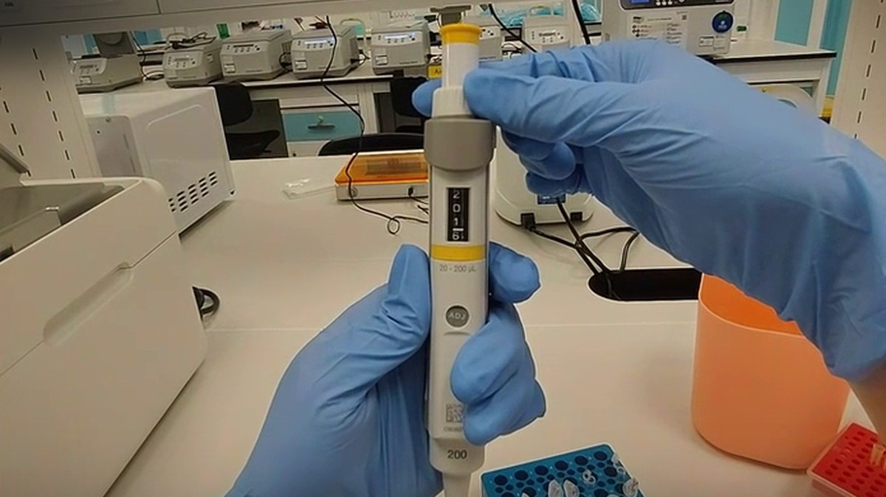

01现场
把课堂里的关键动作，一步步跑通。
装吸头、调体积、预润洗、吸液、排液、退吸头、收尾。我们把真实实验课拆成可观察的步骤，为每一步设计目标、反馈和错误状态。
- 7个训练关卡
- 1条完整训练路径
News 项目动态
试点、比赛与用户反馈，都会在这里更新。
比赛港科大（广州）第一届创新创业黑客松
把实验课里的真实问题带到黑客松。我们一起拆解操作流程、搭建训练界面，让每一步的目标与反馈都看得见。

01现场
装吸头、调体积、预润洗、吸液、排液、退吸头、收尾。我们把真实实验课拆成可观察的步骤，为每一步设计目标、反馈和错误状态。
02过程
一次集中协作，让课堂观察与产品实现接上。

老师难以同时盯住每一张实验台；学生需要在操作过程中就知道哪里出了错。

把操作要求转化为界面、关卡和状态提示，现场走完训练路径。

把现场验证带回产品迭代，在 Demo 中展示已实现的训练界面和实际操作。
03照片


